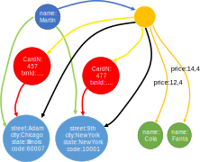
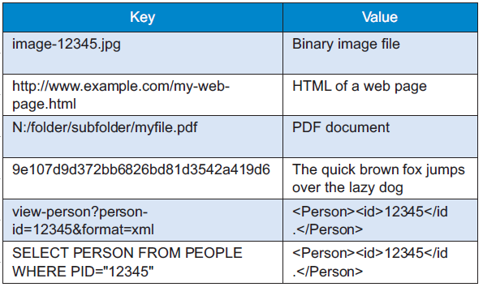
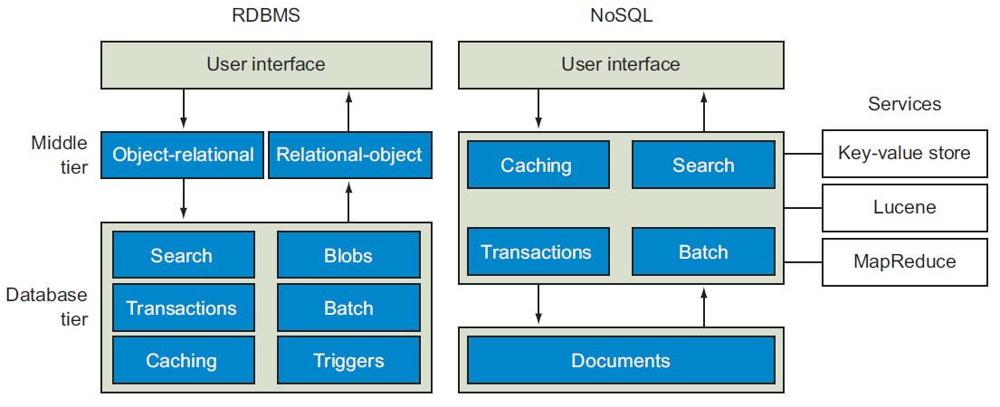
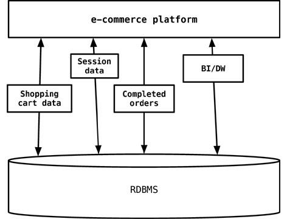

Big Data and Cloud Platforms (Module 2)
NoSQL DBMS
DISI — University of Bologna
m.francia@unibo.it
Not only SQL
Strengths of RDBMSs?
Strengths of RDBMSs
ACID properties
- Provides guarantees in terms of consistency and concurrent accesses
Data integration and normalization of schemas
- Several application can share and reuse the same information
Standard model and query language
- The relational model and SQL are very well-known standards
- The same theoretical background is shared by the different implementations
Robustness
- Have been used for over 40 years
Weaknesses of RDBMS?
Weaknesses of RDBMS
Impedance mismatch
- Data are stored according to the relational model, but applications to modify them typically rely on the object-oriented model
- Many solutions, no standard
- E.g.: Object Oriented DBMS (OODBMS), Object-Relational DBMS (ORDBMS), Object-Relational Mapping (ORM) frameworks
Painful scaling-out
- Not suited for a cluster architecture
- Distributing an RDBMS is neither easy nor cheap (e.g., Oracle RAC)
Consistency vs latency
- Consistency is a must – even at the expense of latency
- Today’s applications require high reading/writing throughput with low latency
Schema rigidity
- Schema evolution is often expensive
What NoSQL means
The term has been first used in 1998 by Carlo Strozzi
- It referred to an open-source RDBMS that used a query language different from SQL
In 2009 it was adopted by a meetup in San Francisco
- Goal: discuss open-source projects related to the newest databases from Google and Amazon
- Participants: Voldemort, Cassandra, Dynomite, HBase, Hypertable, CouchDB, MongoDB
Today, NoSQL indicates DBMSs adopting a different data model from the relational one
- NoSQL = Not Only SQL
- According to Strozzi himself, NoREL would have been a more proper noun
The first NoSQL systems
LiveJournal, 2003
- Goal: reduce the number of queries on a DB from a pool of web servers
- Solution: Memcached, designed to keep queries and results in RAM
Google, 2005
- Goal: handle Big Data (web indexing, Maps, Gmail, etc.)
- Solution: BigTable, designed for scalability and high performance on Petabytes of data
Amazon, 2007
- Goal: ensure availability and reliability of its e-commerce service 24/7
- Solution: DynamoDB, characterized by strong simplicity for data storage and manipulation
NoSQL common features
Not just rows and tables: several data models adopted to store and manipulate data


NoSQL common features
Freedom from joins: joins are either not supported or discouraged


NoSQL common features
Distributed, shared-nothing architecture
- A shared-nothing architecture is a distributed computing architecture in which each update request is satisfied by a single node in a computer cluster
- Nodes do not share (independently access) the same memory or storage.
- Trivial scalability in a distributed environment with no performance decay

Shared everything vs shared nothing
NoSQL common features
Freedom from rigid schemas: data can be stored or queried without pre-defining a schema (schemaless or soft-schema)
NoSQL common features
SQL is dead, long live SQL!
- Some systems do adopt SQL (or a SQL-like language)
NoSQL in the Big Data world
NoSQL systems are mainly used for operational workloads (OLTP)
- Optimized for high read and write throughput on small amounts of data
Big Data technologies are mainly used for analytical workloads (OLAP)
- Optimized for high read throughput on large amounts of data
Can NoSQL systems be used for OLAP?
- Possibly, but through Big Data analytical tools (e.g., Spark)
NoSQL: several data models
One of the key challenges is to understand which one fits best with the required application
| Model | Description | Use cases |
|---|---|---|
| Key-value | Associates any kind of value to a string | Dictionary, lookup table, cache, file and images storage |
| Document | Stores hierarchical data in a tree-like structure | Documents, anything that fits into a hierarchical structure |
| Wide-column | Stores sparse matrixes where a cell is identified by the row and column keys | Crawling, high-variability systems, sparse matrixes |
| Graph | Stores vertices and arches | Social network queries, inference, pattern matching |
Running example
Typical use case: customers, orders and products

Running example
Relational: data model
Based on tables and rows

Relational model
Data modeling example: relational model

Relational implementation
Graph: data model
Each DB contains one or more graphs
- Each graph contains vertices and arcs
- Vertices: usually represent real-world entities
- E.g.: people, organizations, web pages, workstations, cells, books, etc.
- Arcs: represent directed relationships between the vertices
- E.g.: friendship, work relationship, hyperlink, ethernet links, copyright, etc.
- Vertices and arcs are described by properties
- Arcs are stored as physical pointers
Most known specializations:
- Reticular data model: parent-child or owner-member relationships
- Triplestore: subject-predicate-object relationships (e.g., RDF)

Property graph
Graph: querying
Graph databases usually model relationships-rich scenarios
- The query language simplifies the navigation of these relationships
- Query language based on detecting patterns
- Support for transactions
- Support for indexes, selections and projections
| Query | Pattern |
|---|---|
| Find friends of friends | (user)-[:KNOWS]-(friend)-[:KNOWS]-(foaf) |
| Find shortest path from A to B | shortestPath((userA)-[:KNOWS*..5]-(userB)) |
| What has been bought by those who bought my same products? | (user)-[:PURCHASED]->(product)<-[:PURCHASED]-()-[:PURCHASED]->(otherProduct) |
Data modeling example: graph model
IDs are implicitly handled; different edge colors imply different edge types

Graph vs Aggregate modeling
The graph data model is intrinsically different from the others
Data-driven modeling
- Focused on the relationships rather than on the entities per-se
- Limited scalability: it is often impossible to shard a graph on several machines without “cutting” several arcs
- I.e. having several cross-machine links
- Batch cross-machine queries: don’t follow relationships one by one, but “group them” to make less requests
- Limit the depth of cross-machine node searches
Aggregate-oriented modeling: data queries together are stored together
- Aggregate = key-value pair, document, row (respectively)
- The aggregate is the atomic block (no guarantees for multi-aggregate operations)
Based on the concept of encapsulation
- Avoid joins as much as possible and achieve high scalability
- Data denormalization and potential inconsistencies in the data
- Query-driven modeling
Document: data model
Each DB contains one or more collections (corresponding to tables)
- Each collection contains a list of documents (usually JSON)
- Documents are hierarchically structured
Each document contains a set of fields
- The ID is mandatory
Each field corresponds to a key-value pair
- Key: unique string in the document
- Value: either simple (string, number, boolean) or complex (object, array, BLOB)
- A complex field can contain other field
Document: querying
The query language is quite expressive
- Can create indexes on fields
- Can filter on the fields
- Can return more documents with one query
- Can select which fields to project
- Can update specific fields
Different implementations, different functionalities
- Some enable (possibly materialized) views
- Some enable MapReduce queries
- Some provide connectors to Big Data tools (e.g., Spark, Hive)
- Some provide full-text search capabilities
Data modeling example: aggregate model


Data modeling example: document model


Key-value: data model
Each DB contains one or more collections (corresponding to tables)
- Each collection contains a list of key-value pairs
- Key: a unique string
- E.g.: ids, hashes, paths, queries, REST calls
- Value: a BLOB (binary large object)
- E.g.: text, documents, web pages, multimedia files
Looks like a simple dictionary
- The collection is indexed by key
- The value may contain several information
- Definitions, synonyms and antonyms, images, etc.

Key-value: querying
Three simple kinds of query:
- put($key as xs:string, $value as item())
- Adds a key-value pair to the collection
- If the key already exists, the value is replaced
- get($key as xs:string) as item()
- Returns the value corresponding to the key (if it exists)
- delete($key as xs:string)
- Deletes the key-value pair
The value is a black box: it cannot be queried!
- No “where” clauses
- No indexes on the values
- Schema information is often indicated in the key
| Key | Value |
|---|---|
| user:1234:name | Enrico |
| user:1234:city | Cesena |
| post:9876:written-by | user:1234 |
| post:9876:title | NoSQL Databases |
| comment:5050:reply-to | post:9876 |
Data modeling example: key-value model
Product collection
| key | value |
|---|---|
| p-1:name | Cola |
| p-2:name | Fanta |
Customer collection
| key | value |
|---|---|
| cust-1:name | Martin |
| cust-1:adrs | [ {“street”:“Adam”, “city”:“Chicago”, “state”:“Illinois”, “code”:60007}, {“street”:“9th”, “city”:“NewYork”, “state”:“NewYork”, “code”:10001}] |
| cust-1:ord-99 | { “orderpayments”: [ {“card”:477, “billadrs”: {“street”:“Adam”, “city”:“Chicago”, “state”:“illinois”, “code”:60007} }, {“card”:457, “billadrs”: {“street”:“9th”, “city”:“NewYork”, “state”:“NewYork”, “code”:10001} ], “products”: [ {“id”:1, “name”:“Cola”, “price”:12.4}, {“id”:2, “name”:“Fanta”, “price”:14.4} ], “shipAdrs”: {“street”:“9th”, “city”:“NewYork”, “state”:“NewYork”, code”:10001}} |
Wide column: data model
Each DB contains one or more column families (corresponding to tables)
- Each column family contains a list of row in the form of a key-value pair
- Key: unique string in the column family
- Value: a set of columns
Each column is a key-value pair itself
- Key: unique string in the row
- Value: simple or complex (supercolumn)
Essentially a 2-dimensional key-value store
- Rows specify only the columns for which a value exists
- Particularly suited for sparse matrixes and many-to-many relationships

Wide column: querying
The query language expressiveness is in between key-value and document data models
- Column indexes are discouraged
- Can filter on column values (not always)
- Can return more rows with one query
- Can select which columns to project
- Can update specific columns (not always)
Given the similarity with the relational model, a SQL-like language is often used
Wide column: ≠ columnar


Do not mistake the wide column data model with the columnar storage used for OLAP applications
Row-oriented
- Pro: inserting a record is easy
- Con: several unnecessary data may be accessed when reading a record
Column-oriented
- Pro: only the required values are accessed
- Con: writing a record requires multiple accesses
Data modeling example: wide-column model
Examples of wide columns
Aggregate modeling strategy
The aggregate term comes from Domain-Driven Design
- An aggregate is a group of tightly coupled objects to be handled as a block
- Aggregates are the basic unit for data manipulation and consistency management
Advantages
- Can be distributed trivially
- Data that should be used together (e.g., orders and details) are stored together
- Facilitate the developer’s job
- By surpassing the impedance mismatch problem
Disadvantages
- No design strategy exists for aggregates
- It only depends on how they are meant to be used
- Can optimize only a limited set of queries
- Data denormalization -> possible inconsistencies
RDBMSs are agnostic from this point of view
Sharding data
A look behind the curtain
Sharding data
One of the strengths of NoSQL systems is their scale-out capability
- Aggregate data modeling: well suited for being distributed within a cluster
- NoSQL systems can be used in a single server environment too
- Graph databases do not scale as well as the others
Two aspects must be considered when deploying on a cluster
- Sharding: distributing the data across different nodes
- Replication: creating copies of the data on several nodes
Sharding
Sharding: subdividing data in shards that are stored in different machines
- Intrinsic in a distributed DB
- Improves the efficiency of the system
- Read/write operations are distributed
A good sharding strategy is fundamental to optimize performances
- Usually based on one or more fields composing the sharding key
Sharding
Sharding strategy
Thumbs-up rules for a sharding strategy:
Data-locality
- Store the data close to those that need to access them
- E.g., store orders of Italian customers in the European data center
Keep a balanced distribution
- Each node should have the same percentage of data (more or less)
Keep together the data that must be accessed together
- E.g., store each client’s orders in the same node
Sharding strategy
Hash strategy: a hash function is used to allocate data to partitions
- Adopted by DynamoDB and Cassandra
- Pro: ensures even data distribution across nodes and massive scalability
- Pro: new nodes can be added without heavy data redistribution
- Con: range queries become inefficient

Hash sharding
Sharding strategy
Range strategy: each partition contains a range of sorted data
- Adopted by HBase
- Pro: efficiently run range queries that work on the sharding key values
- Con: global ordering often generates hot spots -> risk of bottlenecks
- Con: ranges are defined a priori and this can determine heavy data redistribution

Range strategy
Sharding strategy
Auto-sharding: the database distributes the data according to the workload
- Beware: redefining (or choosing later) the sharding strategy can be quite expensive
Auto-sharding
Replication
Replication: the data is copied on several nodes
- Improves the robustness of the system
- In case of node failure, replicas prevent data loss
- Improves the efficiency of the system
- More users read the same data from different copies, in parallel
- Higher chance of enforcing data-locality
How to distribute the replicas?
- Random (possibly topology-aware) distribution of each record
- Similarly to HDFS blocks
- Replication of entire instances
Main issue: each update must be pushed to every replica
- Two techniques to handle updates: master-slave, peer to peer
Master-slave replication
Master
- It’s the manager of the data
- Handles each and every write operation
- Can be chosen or drawn
Slaves
- Enable read operations
- In sync with the master
- Can become masterif the latter fails
Master-slave replication
Pros
- Easily handles many read requests
- Slaves do not need the master to perform reads
- Useful when the workload mainly consists of reads
- Useful to avoid write conflicts
Cons
- The master is a bottleneck
- Only the master can handle writes
- In case of failure, a new master must be drawn
- Delay in write propagation can be a source of inconsistency
- Two users may read different values at the same time
- Read inconsistency can be problematic, but are relatively limited in time
- Not ideal when the workload mainly consists of writes
Peer-to-peer replication
Each node has the same importance
Each node can handle write operations
The loss of a node does not compromise reads nor writes

Peer-to-peer replication
Pro
- The failure of a node does not interrupt read nor write requests
- Write performances easily scale by adding new nodes
Cons
- Conflicts!
- Delay in write propagation can be a source of inconsistency
- Same as with master-slave replication
- Two users may update the same value from different replicas
- Write inconsistencies are way worse
Handling conflicts
Read conflicts
- Tolerate conflicts: the inconsistency window is usually limited
- Read-your-writes: read consistency is guaranteed for the data written by the same user
- Applies only to reads that immediately follow a write operation
- One way is to associate a user to a node (risk: unbalanced workloads)
- Typically, versioning fields are used to ensure that the up-to-date version is read
Write conflicts (P2P model)
- Last write wins: in case of conflict, the latest update overrides the others
- Conflict prevention: enforce writes on the most recent version by verifying that the value hasn’t changed since the last read
- Conflict detection: preserve history, merge results, and let the user decide
The quorum mechanism
The quorum mechanism ensures consistent IO under replication
- Based on contacting a majority of the nodes responsible for certain data
- The quorum is the minimum number of nodes that a distributed operation has to obtain in order to be allowed to perform an operation on a replicated data item
Each data item has \(N\) replicas
- Writing quorum: \(W > \frac{N}{2}\)
- The write operation is allowed only if W replicas can be updated
- Ensures that two write operations cannot occur concurrently
- Reading quorum: \(R > N-W\)
- The read operation is allowed only if R replicas can be read
- Ensures that (at least) one copy with the up-to-date value is read

Managing consistency
A look behind the curtain
RDBMS vs NoSQL: different philosophies
RDBMS come from decades of widespread usage
- Strong focus on data consistency
- Years of research activities to optimize performances
- Highly complex systems (triggers, caching, security, etc.)
NoSQL systems are designed to succeed where RDBMSs fail
- Strong focus on data sharding and high availability
- Quite simple systems (for now)
- Speed and manageability rather than consistency at all costs

Consistency: an example
Consider 1000€ to be transferred from bank account A to B; the transfer is made by:
- Removing 1000€ from A
- Adding 1000€ to B
What should never happen
- The money is removed from A but not added to B
- The money is added twice to B
- A query on the database shows an intermediate state
- E.g., A+B = 0€
RDBMS adopt transactions to avoid this kind of issue
Consistency in RDBMSs: ACID
Transactions guarantee four fundamental properties: ACID
Atomicity
- The transaction is indivisible: either it fully completes, or it fails
- It cannot be completed partially
Consistency
- The transaction leaves the DB in a consistent state
- Integrity constraints can never be violated
Isolation
- The transaction is independent from the others
- In case of concurrent transactions, the effect is the same of their sequential execution
Durability
- The DBMS protects the DB from failures
Consistency in RDBMSs: ACID
Implementation of ACID properties relies on locking mechanisms and logs
- Resources are locked, updates are logged
- In case of problems, rollback to the original state
- If no error occurs, unlock the resources
Consistency is guaranteed to the detriment of speed and availability
- User may have to wait
- Hard to replicate this mechanism in a distributed environment
But, sometimes, consistency is not that important
- E.g.: e-commerce application
- Shopping cart management requires speed and availability
- Order emission requires consistency
Consistency in NoSQL
Several attempts have been made to describe NoSQL properties with respect to ACID properties
- CAP theorem
- PACELC theorem
- BASE philosophy
They are not properties on which NoSQL systems rely
- Rather, they simply try to describe their behavior
Consistency in NoSQL: CAP
“Theorem”: only two of the following three properties can be guaranteed
Consistency: the system is always consistent
- Every node returns the same, most recent, successful write
- Every client has the same view of the data
Availability: the system is always available
- Every non-failing node returns a response for all read and write requests in a reasonable amount of time
Partition tolerance: the system continues to function and upholds its consistency guarantees in spite of network partitions
- In distributed systems, network partitioning is inevitably a possibility
Consistency in NoSQL: CAP
Three situations
- CA: the system cannot suffer from network partitioning (single server)
- AP: in case of partitioning, the system sacrifices consistency (overbooking)
- CP: in case of partitioning, the system sacrifices availability (bookings prevented)
Theorem interpretation is not trivial
- Asymmetric properties: consistency is sacrificed to favor speed at all times, not just when partitioning happens
- Different application requirements -> different algorithms handle these properties more strictly/loosely
Consistency in NoSQL: relaxing CAP
Consider two users that want to book the same room when a network partition happens
CP: no one can book (A is sacrificed)
- Not the best solution
AP: both can book (C is sacrificed)
- Possible overbooking: writing conflict to handle
caP: only one can book
- The other will se the room available but cannot book it
This is admissible only in certain scenarios
- Finance? Blogs? E-commerce?
It’s important to understand:
- What is the tolerance to obsolete reads
- How large can the inconsistency window be
Consistency in NoSQL: PACELC
Evolution of the CAP theorem (less known, but more precise)
- if (Partition) then { Avaialbility or Consistency? }
- Else { Latency or Consistency? }
Different behavior in case or in absence of partitioning
- PA: in case of partitioning, the system sacrifices consistency (overbooking)
- PC: in case of partitioning, the system sacrifices availability (bookings prevented)
- EL: otherwise, the system sacrifices consistency in favor of speed
- EC: otherwise, the system sacrifices speed in favor of consistency
Four situations:
- PA EL: system focused on speed and availability (main NoSQL philosophy)
- PA EC: consistency sacrificed only when partitioning happens
- PC EL: consistency enforced only when partitioning happens (e.g., Yahoo Sherpa)
- PC EC: system focused on consistency (RDBMS)
Consistency in NoSQL: BASE
The CAP theorem is often cited as a justification for the use of weaker consistency models, for example BASE
- Basically Available Soft-state services with Eventual consistency
Basic Availability: the system should always be available
Soft-state: it is acceptable for the system to be temporarily inconsistent
Eventual consistency: eventually, the system becomes consistent
ACID
- Pessimistic approach (better safe than sorry)
BASE
- Optimistic approach (everything is going to be ok)
- Higher throughput is better than enforcing consistency
Consistency in NoSQL: summary
| Source | Cause | Effect | Solution |
|---|---|---|---|
| Replication (MS and P2P) | Write propagation delay between replicas is slow | Read conflicts | - Tolerate - Read-your-writes - Quorum |
| Replication (P2P) | Two write operations can be issued on different replicas | Write conflicts | - Last write wins - Conflict prevention - Conflict detection - Quorum |
| Network partitioning | Inability to communicate with all replicas of a certain data | - Read conflicts - Possibly write conflicts |
- Relax CAP - Prevent write conflicts - Handle read conflict as above |
| No ACID transactions | - An update over multiple records fails mid-query - Two updates over multiple records are interleaved |
Unrecoverable inconsistency | - Each system provides its own mechanism to offer limited ACID-like transactions |
| Data de-normalization | The same data is repeated in different instances with different values | Inability to find the correct values | - Avoid denormalization if strong consistency is needed - Data cleaning before analysis |
One size does not fit all
To each application its own data model
Key-Value: popular DBs
Redis (Data Structure server): http://redis.io/
- Supports complex fields (list, set, …) and operations on values (range, diff, …)
Memcached DB: http://memcached.org/
- Riak: http://basho.com/riak/
Key-Value: when to use
Very simple use cases
- Independent data (no need to model relationships)
- The typical query is a simple lookup
- Need super-fast performance
Examples
- Session information
- Each web session is identified by its own sessionId: All related data can be stored with a PUT request and returned with a GET request
- User profiles, preferences
- Each user is uniquely identified (userId, username) and has her own preferences in terms of language, colors, timezone, products, etc.
- data that fits well within an aggregate
- Shopping cart, chat services
- Each e-commerce websites associates a shopping cart to a user; it can be stored as an aggregate identified by the user ID
Key-Value: real use cases
Crawling of web pages
- The URL is the key, the whole page content (HTML, CSS, JS, images, …) is the value
Twitter timeline
- The user ID is the key, the list of most recent tweets to be shown is the value
Amazon S3 (Simple Storage Service)
- A cloud-based file system service
- Useful for personal backups, file sharing, website or apps publication
- The more you store, the more you pay
- Storage: approx. $0.03 per GB per month
- Uploading files: approx. $0.005 per 1000 items
- Downloading files: approx. $0.004 per 10,000 files* PLUS $0.09 per GB (first GB free)
Key-value
Key-Value: when to avoid
Data with many relationships
- When relationships between data (in the same or in different collections) must be followed
- Some systems offer limited link-walking mechanisms
Multi-record operations
- Because operations (mostly) involve one record at a time
Querying the data
- If it is necessary to query the values, not just the key
- Few systems offer limited functionalities (e.g., Riak Search)
Document: popular DBs
MongoDB: http://www.mongodb.org
Couchbase: http://www.couchbase.com
CouchDB: http://couchdb.apache.org
Document: when to use
Higher expressiveness
- Store data according to a highly nested data model
- Need to formulate complex queries on many fields
Examples
- Event logs
- Central repo to store event logs from many applications; shard on app name or event type
- CMS, blogging platforms
- The absence of a predefined schema fits well* within content management systems (CMS) or website management applications, to handle comments, registrations and user profiles
- Web Analytics or Real-Time Analytics
- The ability to update only specific fields enables fast update of analytical metrics
- Text indexing enables real-time sentiment analysis and social media monitoring
- E-commerce applications
- Schema flexibility is often required to store products and orders, as well as to enable schema evolution without incurring into refactoring or migration costs
Document: real use cases
Advertising services
- MongoDB was born as a system for banner ads
- 24/7 availability and high performance
- Complex rules to find the right banner based on user’s interests
- Handle several kinds of ads and show detailed analytics
Internet of Things
- Real-time management of sensor-based data
- Bosch uses MongoDB to capture data from cars (breaks, ABS, windscreen wiper, etc.) and aircrafts maintenance tools
- Business rules are applied to warn the pilot when the breaking system pressure falls under a critical threshold, or the maintenance operator when the tool is used improperly
- Technogym uses MongoDB to capture data from gym equipment
Document: when to avoid
ACID transactions requirement
- If not for a few exceptions (e.g., RavenDB), document databases are not suited for cross-document atomicity
Queries on high-variety data
- If the aggregate structure continuously evolves, queries must be constantly updated (and normalization clashes with the concept of aggregate)
Wide column: popular DBs
Cassandra: http://cassandra.apache.org
HBase: https://hbase.apache.org
Google BigTable: https://cloud.google.com/bigtable
Wide column: when to use
Compromise between expressiveness and simplicity
- Limited (but some) requirements in terms of data model
- Limited (but some) requirements in terms of querying records
Examples
- Event logs; CMS, blogging platforms
- Similarly to document databases, different applications may use different columns
- Sparse matrixes
- While an RDBMS would store null values, a wide column stores only the columns for which a value is specified
- GIS applications
- Pieces of a map (tiles) can be stored as couples of latitude and longitude
Wide column: real use cases
Google applications
- BigTable is the DB used by Google for most of its applications, including Search, Analytics, Maps and Gmail
User profiles and preferences
- Spotify uses Cassandra to store metadata about users, artists, songs, playlists, etc.
Manhattan
- After using Cassandra, Twitter ha developed its own proprietary NoSQL system to support most of its services
Wide column: when to avoid
Same as for document model
- ACID transactions requirement
- Queries on high-variety data
Need for full query expressiveness
- Joins are highly discouraged
- Limited support for filters and group bys
Graph: popular DBs
Neo4J: http://neo4j.com
TigerGraph: https://www.tigergraph.com/
Graph: when to use
Interlinked data
- Social networks are one of the most typical use case of graph databases (e.g., to store friendships or work relationships); every relationship-centric domain is a good one
Routing and location-based services
- Applications working on the TSP (Travelling Salesman Problem) problem
- Location-based application that, for instance, recommend the best restaurant nearby; in this case, relationships model the distance between node
Recommendation applications, fraud-detection
- Systems recommending «the products bought by your friends», or «the products bought by those who bought your same products»
- When relationships model behaviors, outlier detection may be useful to identify frauds
Graph: real use cases
Relationships analysis
- Finding common friends (e.g., friend-of-a-friend) in a social network
- Identifying clusters of phone calls that identify a criminal network
- Analyzing flows of money to identifying money recycling patterns or credit card theft
- Main users: law firms, police, intelligence agencies
- Useful for text analysis as well (Natural Language Processing)
Inference
- Creating rules that define new knowledge based on existing patterns (e.g., transitive relationships, trust mechanisms)
Graph: when to avoid
Data-intensive applications
- Traversing the graph is trivial, but analyzing the whole graph can be expensive
- There exist framework for distributed graph analysis (e.g., Apache Giraph), but they do not rely on a graph DB
Polyglot persistence
Different databases are designed to solve different problems
Using a single DBMS to handle everything…
- Operational data
- Temporary session information
- Graph traversing
- OLAP analyses
- …
… usually lead to inefficient solutions
- Each activity has its own requirements (availability, consistency, fault tolerance, etc.)
Traditional approach
The one-size-fits-all solution…
One-size-fits-all
Polyglot data management
… replaced by the polyglot solution

Polyglot solution
Service-oriented polyglot data management
Each DB should be “embedded” within services, which offer API services to enable data access and manipulation
- Several NoSQL systems (e.g., Riak, Neo4J) already provide REST APIs
Encapsulating DBs with API
Supporting existing technologies
If the current solution cannot be changed, NoSQL systems can still support the existing ones

Legacy solutions
Beyond NoSQL
NewSQL systems
- Combine the benefits from both relational and NoSQL worlds
- Ensure scalability without compromising consistency, but by compromising some availability
Extended RDBMSs
- KV implementable as a table with two fields: a string key, and a blob value
- Cypher query language on top of a relational implementation of a graph
- Hstore data type in PostgreSQL for wide-column-like implementation
- Scalabilty issue remains
Multi-model NoSQL DBMSs
- ArangoDB, OrientDB
- Support all NoSQL data models, but not the relational one
Database-as-a-service
- All cloud providers offer storage services supporting all data models
Matteo Francia - Big Data and Cloud Platforms (Module 2) - A.Y. 2024/25